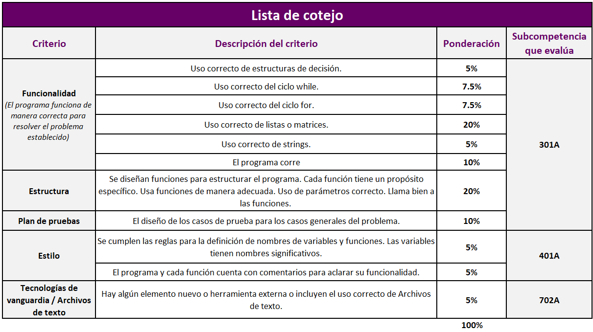

TC 1028. Pensamiento Computacional para Ingeniería
. |
Actividad: Incorpora a tu proyecto cálculos,
condicionales, funciones y estructuras
de repetición
 Modalidad
Modalidad
Individual.
 Objetivos
Objetivos
- Demostrar el manejo adecuado de variables, tipos y operadores.
- Demostrar el manejo adecuado de estructuras de decisión.
- Demostrar el manejo adecuado de funciones.
-
Demostrar el manejo adecuado de estructuras de
repetición.
-
Demostrar competencias en estilo, funcionalidad y
pruebas.
 Instrucciones
Instrucciones
Rúbrica de evaluación de competencias
Evaluación del problema (SING0301A)
- Uso de cálculos de manera correcta.
- Uso de estructuras de decisión de manera correcta.
- Uso de funciones de manera correcta.
- Uso de parámetros correcto.
- Llama bien a las funciones.
- Uso de ciclos de manera correcta.
- Tiene casos de prueba.
Aplicación de estándares y normas (SING0401A)
- Se cumplen las reglas para la definición de nombres de variables y funciones.
- Las variables tienen nombres significativos.
- No hay variables de más.
- Estilo estructurado y claro.
Tecnologías de vanguardia (SEG0702A)
- Hay algún elemento nuevo o herramienta externa.

Especificaciones de entrega
- Guarda el avance de tu proyecto con el nombre:
P1_Matrícula.py.
- Entrega tu archivo en Canvas, en
la sección de Modulos > Proyecto Integrador > Incorpora cálculos,
condicionales, funciones y ciclos .
- No se aceptarán avances del proyecto final por
correo electrónico, ni después de la fecha y horario límite.
Instrucciones para enviar tus archivos por Canvas:
-
Haz clic en el botón de
Entregar tarea.
-
En el fólder de
Carga del archivo, haz clic en el botón de
Examinar y localiza el archivo en Python con extensión
P1_Matrícula.py. Por ejemplo: P1_1293231.py
-
Cuando hayas terminado de subir tu archivo, haz clic en el botón de
Entregar tarea y listo!!
 Recursos
Recursos
© Departamento de Computación
. |